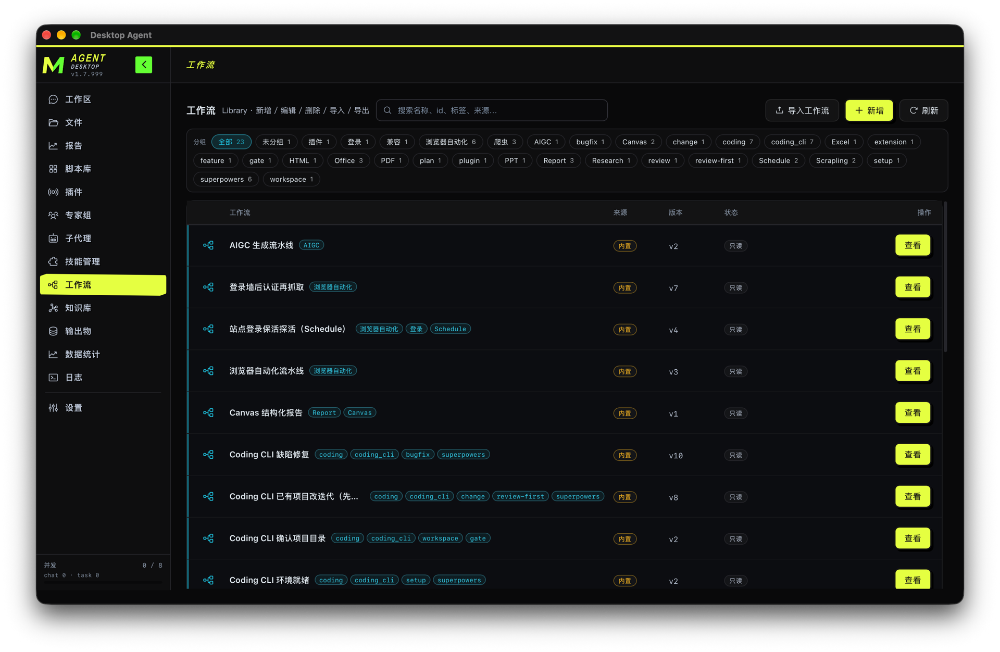
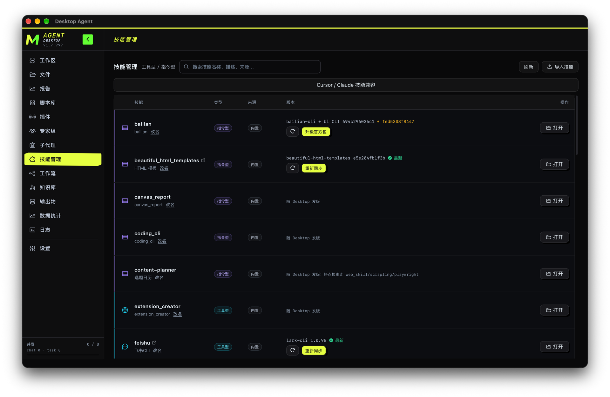
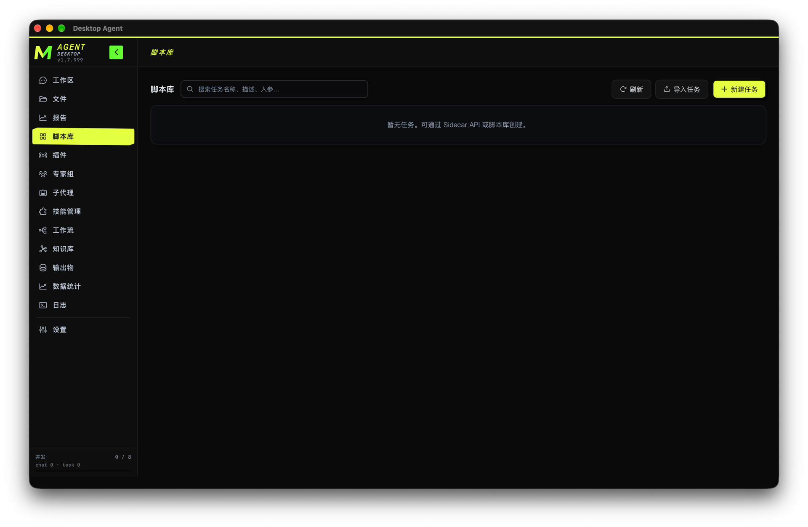
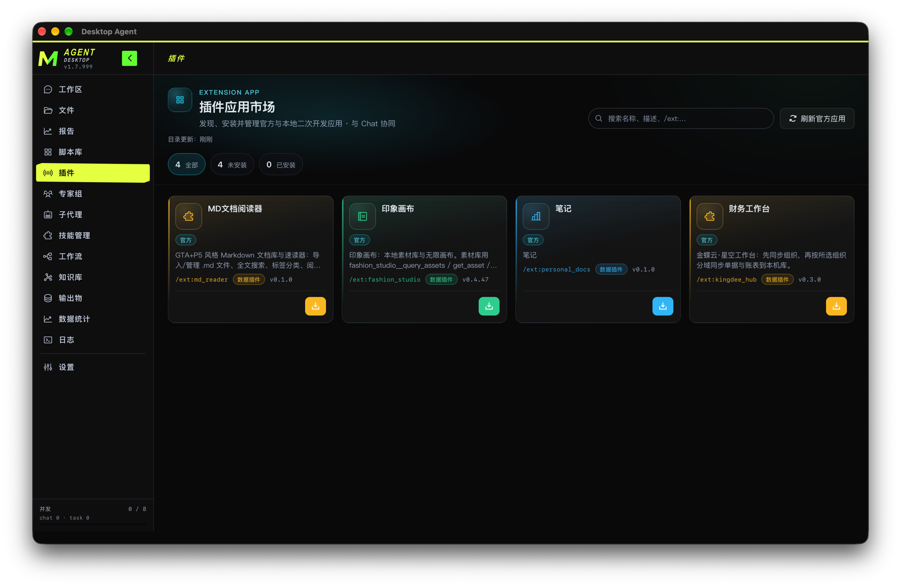
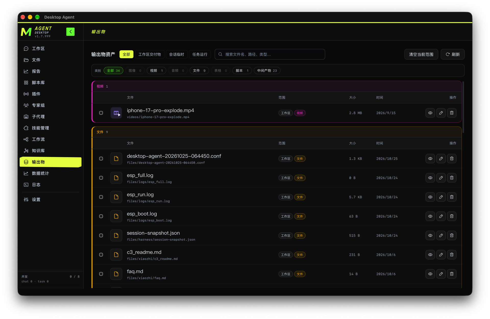

一句话说清目标
文字、截图、录屏、网页元素都可以作为输入。它理解意图，拆解出可执行的计划。
每天早上 9 点巡检服务器，结果发我手机
不是又一个聊天窗口，而是一位能把活干完、还能越干越好的员工。
文字、截图、录屏、网页元素都可以作为输入。它理解意图，拆解出可执行的计划。
编排浏览器、终端、办公技能协同作业；遇到报错自己排查重试，卡住时向你求助而不是瞎猜。
跑通的流程固化为脚本与工作流，经验写进知识库。下一次同类任务，直接复用、按时自动跑。
从网页到终端，从文档到代码，日常办公的作业面它都能上手。
像人一样打开网页、点击、填表、抓数据。登录态可缓存复用，支持整站爬取与视频站点解析，网页上的重复劳动交给它。
直接在你的机器上执行命令、编写脚本、SSH 运维。跑通的脚本一键固化入库，挂上定时器就成了无人值守的例行任务。
PDF、Excel、Office 读写处理；长文档提炼成结构化 Canvas 报告，截图里的表格也能直接导成文件。
23+ 预装技能按需加载，插件商城即装即用；还能用一句话让它给自己写一个新技能。
多步骤任务编排成可复跑的工作流；可并行的活拆给多个子代理同时开工，各自独立工作区，逐项验收。
手机上直接使唤它（Agents Anywhere），结果主动推给你；实时语音对话、桌面通知铃、屏幕感知 —— 不用打开应用，它也在岗。
跨会话长期记忆 + 结构化知识库：踩过的坑记成教训，验证过的做法沉淀成 Playbook，越用越懂你的业务。
以下全部为产品实拍截图。
多步骤任务可视化编排，串行、并行、分支一目了然；确认入库后可手动复跑，也能挂定时器自动执行。

23+ 预装技能覆盖浏览器、办公、编码、多媒体；L0→L3 渐进加载，用到才展开，上下文始终精简。

会话里跑通的脚本一键入库，配好 cron 表达式就成例行任务；每次运行有日志、有产物、有通知。

插件自带界面与工具组，安装后长在工作区侧边栏；数据源、图表、协作类扩展按需加装，互不干扰。

报告、表格、图片、脚本、音视频，每件产出自动登记进输出物面板；预览、下载、分享一站完成。

自动化最怕的不是不会做，而是跑偏了没人知道。Desktop Agent 用一整套运行时治理，让 AI 的每次执行可控、可查、可回滚。
15+ 中间件全程护航：任务检查点、失败自动纠偏、上下文压缩、危险操作先确认。跑偏会被软介入拉回，而不是闷头错到底。
每次工具调用、每条命令、每个文件改动都有结构化日志与运行记录；任务跑到哪、为什么失败，随时可查可回放。
核心服务仅监听 127.0.0.1；会话、知识库、交付物全部落在本机目录。写文件要授权，删除走回收站，敏感操作有边界。
云端多厂商随意切换，也支持 Ollama / llama.cpp 本地模型离线运行；为缓存命中设计的提示词布局，把 token 花在刀刃上。
下面每一条都是真实会话里发生过的任务，不是演示脚本。
探端口、验认证、查资源；改配置前必备份 + 校验 + reload，失败自动回滚。
识别截图中的表格结构，直接产出表格文件归入输出物，不再手工誊抄。
脚本固化入库，挂 cron 自动执行，结果推到手机或桌面通知铃。
先读代码索引定位，再核实调用链，结论带文件行号证据，不凭记忆下判断。
提取、分块、汇总，产出结构化报告，聊天里只留一两句导读。
可并行子目标拆给多个 worker 同时开工，独立工作区，回收时逐项验收。